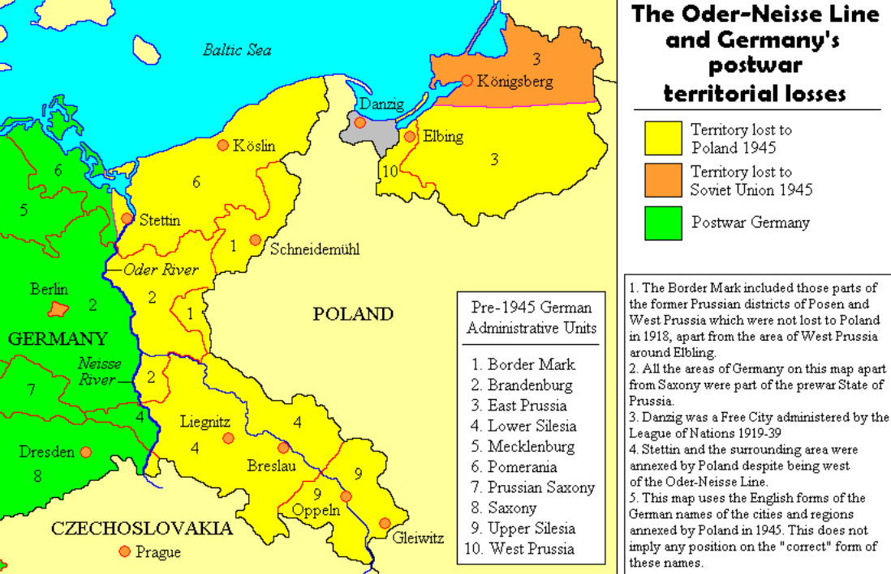
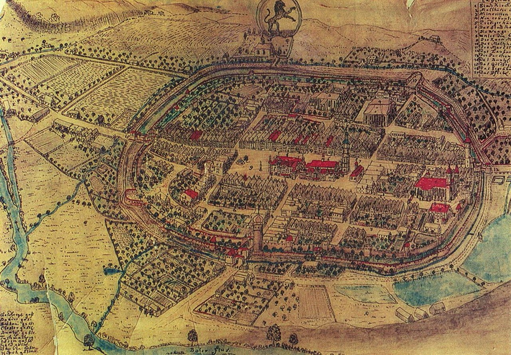
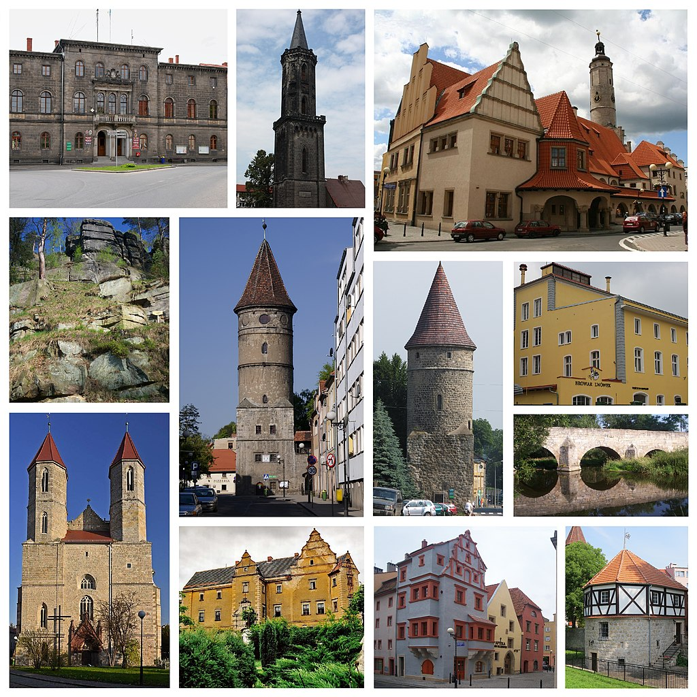
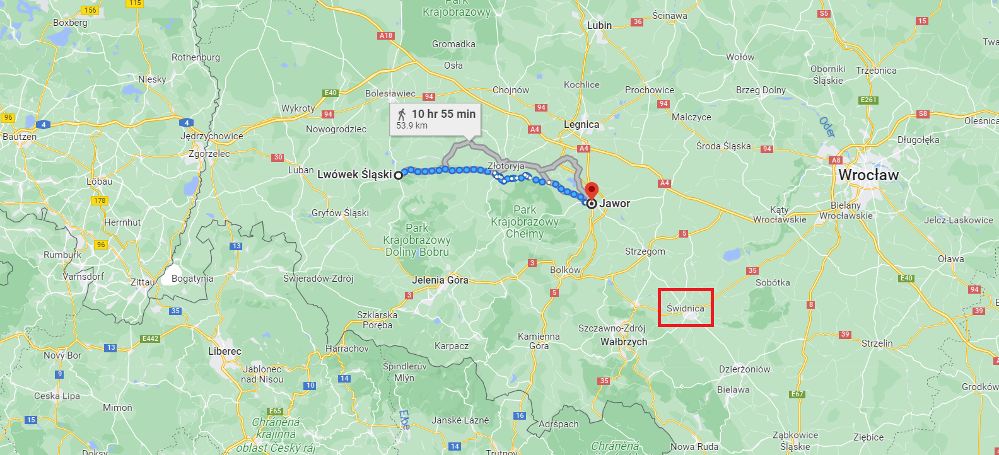
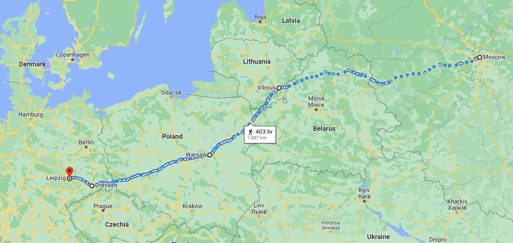

야우어(Jauer)에서의 job interview
게시: 2023-06-12T06:30:04+09:00
연합군의 후퇴 방향을 정할 때 안전하게 전통적 러시아군의 생명선인 칼리쉬로 정하느냐 건곤일척의 비장함을 가지고 오스트리아 국경을 등진 슈바이트니츠로 정하느냐에 있어서, 정답은 없었습니다. 칼리쉬 안이나 슈바이트니츠 안이나 다 장단점이 있었고, 어느 쪽으로 결정을 내리든 엄청난 비난과 반발이 따를 수 밖에 없었습니다. 그리고 그런 어려운 결정을 내리는 주체는 '연합군 수뇌부'라는 어정쩡한 집단이 아니라, 결국 총사령관 한 명이었습니다. 그 총사령관은 바로 비트겐슈타인이었습니다. 문제는 처음부터 비트겐슈타인은 결단력과 그에 따르는 카리스마가 결여된 인물인데다, 그런 그를 그 자리에 임명한 알렉산드르는 아무런 책임을 지지 않고 생색은 낼 수 있는 실질적 총사령관 노릇을 자신이 하기 위해 일부러 비트겐슈타인을 택했다는 점이었습니다. 자신들보다 낮은 서열의 비트겐슈타인이 사령관이 된 것에 대한 러시아 선임 장군들의 불만은 처음부터 대단했는데, 바우첸 전투에서 (비록 알렉산드르의 부당한 작전 간섭 때문이 컸지만) 패배하고나자 비트겐슈타인에 대한 원성은 더욱 높아졌습니다. 프로이센군도 원래부터 러시아군 자체에 대한 불만이 많았으므로 그에 대한 표출은 결국 총사령관인 비트겐슈타인 개인을 향했습니다.

(나폴레옹 당시에는 독일 땅이었던 폼메른(Pommern, 포메라미나), 슐레지엔(Schlesien) 등은 WW2를 일으킨 히틀러의 과오 떄문에 지금은 모두 폴란드 땅이 되었습니다. 하긴 슐레지엔만 하더라도 폴란드어로 슐랑스크(Śląsk)라고 부를 정도로 한때 폴란드 땅이기도 했습니다. 대신 폴란드는 서쪽의 독일 땅을 먹은 만큼 동쪽 영토를 소련에게 내주어야 했습니다. 그래서 폴란드가 본의 아니게 서진하게 되었지요.) 이런 상황에서 연합군은 작센 땅을 벗어나 프로이센 영토인 슐레지엔으로 후퇴 행군을 계속 해야 했습니다. 호기 있게 옆나라로 진격했다가 지치고 초라한 행색으로, 그것도 추격해오는 적군을 꼬리에 달고 고국으로 도망쳐오는 행군은 당연히 사기에 매우 안 좋은 영향을 끼쳤습니다. 5월 24일, 프로이센군은 분츨라우(Bunzlau, 폴란드어로는 볼레스와비어츠 Bolesławiec)에, 러시아군은 뢰벤베르크(Löwenberg, 폴란드어로는 르보벡 Lwówek)에 각각 도착했는데, 여기서 비트겐슈타인의 참모인 마하일로프스키-다닐레프스키(Mikhailovsky-Danilevsky)는 바로 몇 주 전에 자신들을 해방군으로 환영하며 기뻐했던 슐레지엔 주민들이 불안한 눈으로 자신들의 후퇴를 보는 눈길을 마주했습니다. 그에 따르면 부유한 주민들은 곧 프랑스군이 뒤따라온다는 것을 알게 되자 집을 버리고 오스트리아와의 국경인 산맥 쪽 또는 슐레지엔 안쪽으로 피난을 떠났다고 합니다. 적군이 온다고 주민들이 피난을 떠나는 일은 당시 전쟁에서는 매우 이례적인 일이었습니다.

(18세기의 뢰벤베르크 전경입니다. 뢰벤베르크는 원래 폴란드 땅이었으나 13세기 경부터 독일인들이 들어와 살면서 독일화된 곳입니다. 이후에도 폴란드와 합스부르크, 헝가리 등의 싸움에 휘말려 철저히 파괴되기도 했으나 1741년 프로이센이 이 곳을 차지하면서 안정화되었고 번영이 시작되었습니다.)

(뢰벤베르크, 아니 르보벡 슐랑스키(Lwówek Śląski)는 지금도 인구가 1만명이 안 되는 소읍에 불과합니다. 그런데도 저렇게 역사적 건물들이 많네요. 저런 것들은 솔직히 부럽습니다.) 이렇게 분위기가 우중충한 상황에서, 실질적인 보스였던 알렉산드르는 뭔가 인사 조치를 취해야 한다고 생각했습니다. 짜르는 5월 25일, 야우어(Jauer, 폴란드어로는 야보르 Jawor)에서 전체 러시아군 장성들 중에서 가장 서열이 높던 바클레이 드 톨리를 불러 면담했습니다. 바우첸 전투에서 왜 러시아군이 패배했고, 앞으로 어떻게 해야 할지 묻는 짜르 앞에서, 바클레이는 관록의 지휘관답게 막힘없이 소신을 전개했습니다.

(짜르나 바클레이는 당연히 말이나 마차를 탔을 것이고 또 언제나 주력 부대 전체와 함께 움직이지는 않았겠으나, 하루만에 뢰벤베르크에서 야우어까지 55km에 가까운 길을 돌파한 것을 보면 당시 연합군의 후퇴가 얼마나 신속했는지 알 수 있습니다. 짜르가 바클레이를 굳이 야우어에서 면접한 것은 이제 동쪽의 브레슬라우(Breslau 폴란드어로는 브로츠워프 Wrocław)로 가느냐 남동쪽의 슈바이트니츠(Schweidnitz 폴란드어로르는 슈비드니차 Świdnica)로 가느냐를 더 이상 미룰 수 없었기 때문이었을 것입니다.) 바우첸 전투 바로 직전에 바우첸에 도착했던 바클레이가 보기에, 바로 몇 개월 전인 1812년 겨울에 나폴레옹을 박살냈던 러시아군이 힘없이 무너진 이유는 간단했습니다. 러시아군이 지쳤던 것입니다. 실제로 러시아군은 지난 겨울 이후 지금까지 6개월간 거의 쉴 새 없이 계속 싸우고 행군하며 모스크바에서 라이프치히까지 갔다가 다시 드레스덴에서 바우첸까지 되돌아와야 했습니다. 그 과정에서 많은 전투/비전투 병력 손실이 있었고 남아 있는 병력들도 몸과 마음이 모두 지쳤으며, 군화, 군복, 무기, 탄약 모든 면에서 재정비가 필요한 것은 사실이었습니다. 이는 이들을 바로 옆에서 자세히 관찰하고 있던 영국 대사 윌슨 및 스튜어트 등도 동의하는 바였습니다. 윌슨은 이미 5월 초에 러시아군의 비전투 병력 소모가 눈에 띄게 늘고 있다고 적었고, 스튜어트도 바우첸 전투 직전인 5월 17일자 보고서에서 러시아군이 이미 기진맥진한 상태로서 1개 대대 병력이 300명을 넘는 경우가 거의 없고 탄약도 부족한 상태이며, 여전히 작센 사람들이 자신들을 적대시하는데다 참전을 약속했던 오스트리아가 아무리 기다려도 선전포고를 하지 않고 있는 것에 분개하고 있다고 적었습니다.

(말이 쉬워서 모스크바에서 라이프치히이지, 진짜 긴 거리입니다.) 결국 바클레이의 진단은 간단명료했습니다. 작년에 나폴레옹이 패배한 것은, 6개월 간의 원정으로 지친 프랑스군을 칼루가에서 재정비를 하며 원기를 회복한 러시아군이 공격했기 때문이었습니다. 그런데 지금은 상황이 반대이니 러시아군이 지는 것은 당연하다는 것이었습니다. 그러니 앞으로 해야 할 일도 간단했습니다. 후퇴였습니다. 적어도 오데르 강을 건너 폴란드 안쪽으로 후퇴한 뒤 거기서 병력을 쉬게 하고 러시아에서 오는 보충 병력과 보급품으로 부대를 재편성한 뒤 다시 싸워야 한다고 바클레이는 주장했습니다. 게다가 폴란드에서 들려오는 소식도 좋지 않았습니다. 나폴레옹이 다시 대군을 일으켜 동진을 시작했고 뤼첸에서 연합군을 격파했다는 소식은 당연히 폴란드로도 들어갔습니다. 아직 바우첸에서의 패배 소식이 바르샤바에 퍼지지도 않았는데 이미 바르샤바에서는 폴란드인들의 반란 모의 소식이 들려오고 있었습니다. 이 상황에서 폴란드가 친나폴레옹 반란을 일으킨다면 러시아군은 그야말로 끝장이었습니다. 그러니 칼리쉬냐 슈바이트니츠냐는 질문에 대해서 바클레이는 당연히 칼리쉬를 택했습니다. 바클레이의 논리정연하면서도 자신감 넘치는 주장에 알렉산드르는 딱히 할 말이 없었습니다. 바클레이와의 면담을 마친 뒤, 알렉산드르는 자신이 신임하는 몇몇 장군들과 이야기를 해보았는데 대부분은 바클레이의 진단에 동의했습니다. 가장 결정적인 부분은 군복이나 군화, 식량 등은 정신력으로 극복한다고 하더라도, 뤼첸-바우첸에 이어 당장 3번째 전투를 치를 탄약이 충분치 않다는 것은 심각한 사실이었습니다. 알렉산드르는 그래도 결정을 내리지 못하고 고민하며 잠자리에 들었다가, 결국 그 다음날 총사령관을 비트겐슈타인에서 바클레이로 교체한다는 칙령을 내렸습니다. 이제 연합군은 슈바이트니츠를 포기하고 브레슬라우를 거쳐 칼리쉬로, 이어서 폴란드 바르샤바까지 후퇴할 일만 남았을까요? 일이 그렇게 간단하지가 않았습니다. 사태는 반전에 반전을 거칩니다. Source : The Life of Napoleon Bonaparte, by William Milligan Sloane Napoleon and the Struggle for Germany, by Leggiere, Michael V https://en.wikipedia.org/wiki/Oder%E2%80%93Neisse_line https://en.wikipedia.org/wiki/Jawor https://en.wikipedia.org/wiki/Lw%C3%B3wek_%C5%9Al%C4%85ski